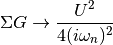

dmft.ipt_imag¶
IPT Solver Single Band¶
Within the iterative perturbative theory (IPT) the aim is to express the self-energy of the impurity problem as
The contribution of the Hartree-term is drooped because at half-filling it cancels with the chemical potential. The next equalities are obtained by using the anti-periodicity of the fermionic imaginary time Green functions, and because of the half-filled case and particle hole symmetry the last equality is fulfilled
As such for the single band paramagnetic case at half-filling the self energy is estimated by
Functions¶
-
dmft.ipt_imag.dimer_sigma(u_int, tp, g0iw_d, g0iw_o, tau, w_n)¶ Given a Green function it returns the self-energy
Which is done element wise given the form of the local interaction in the dimer. For symmetry reasons only the 2 arrays are returned, corresponding to the diagonal and off-diagonal terms of the matrix self-energy
The Fourier transforms uses an empirically established tail expansion
where are calculated from the derivatives of the
Parameters: - u_int (float, local contact interaction) –
- tp (float, dimer hybridization strength) –
- g0iw_d (complex 1D ndarray) – bare local Green function, the Weiss field
- g0iw_o (complex 1D ndarray) – bare hybridizing Green function, the Weiss field
- tau (real 1D array) – Imaginary time points, not included edge point of
- w_n (real 1D ndarray) – Matsubara frequencies
Examples using dmft.ipt_imag.dimer_sigma¶


-
dmft.ipt_imag.dmft_loop(u_int, t, g_iwn, w_n, tau, mix=1, conv=0.001)¶ Performs the paramagnetic(spin degenerate) self-consistent loop in a bethe lattice given the input
Parameters: - u_int (float) – Local interation strength
- t (float) – Hopping amplitude between bethe lattice nearest neighbors
- g_iwn (complex float ndarray) – Matsubara frequencies starting guess Green function
- tau (real float ndarray) – Imaginary time points. Only use the positive range
- mix (real ) – fraction of new solution for next input as bath Green function
- w_n (real float array) – fermionic matsubara frequencies. Only use the positive ones
Returns: Interacting Green’s function in matsubara frequencies Self energy
Return type: tuple 2 complex ndarrays
Examples using dmft.ipt_imag.dmft_loop¶


-
dmft.ipt_imag.e_mean(beta, D=1)¶ Returns the average kinetic Energy per particle in semicircle dos
-
dmft.ipt_imag.ekin(g_iw, s_iw, beta, w_n, ek_mean, g_iwfree)¶ Calculates the Kinetic Energy
Examples using dmft.ipt_imag.ekin¶
-
dmft.ipt_imag.ekin_tau(g_iw, tau, w_n, u_int)¶
-
dmft.ipt_imag.epot(g_iw, s_iw, u, beta, w_n)¶ Calculates the Potential Energy
Using the local Green Function and self energy the potential energy is calculated using Potential energy
Taking the tail of this product to decay in the half-filled single band case as:

The potential energy per spin is calculated by
Examples using dmft.ipt_imag.epot¶
-
dmft.ipt_imag.fsolve(func, x0, args=(), fprime=None, full_output=0, col_deriv=0, xtol=1.49012e-08, maxfev=0, band=None, epsfcn=None, factor=100, diag=None)¶ Find the roots of a function.
Return the roots of the (non-linear) equations defined by
func(x) = 0given a starting estimate.Parameters: - func (callable
f(x, *args)) – A function that takes at least one (possibly vector) argument. - x0 (ndarray) – The starting estimate for the roots of
func(x) = 0. - args (tuple, optional) – Any extra arguments to func.
- fprime (callable
f(x, *args), optional) – A function to compute the Jacobian of func with derivatives across the rows. By default, the Jacobian will be estimated. - full_output (bool, optional) – If True, return optional outputs.
- col_deriv (bool, optional) – Specify whether the Jacobian function computes derivatives down the columns (faster, because there is no transpose operation).
- xtol (float, optional) – The calculation will terminate if the relative error between two consecutive iterates is at most xtol.
- maxfev (int, optional) – The maximum number of calls to the function. If zero, then
100*(N+1)is the maximum where N is the number of elements in x0. - band (tuple, optional) – If set to a two-sequence containing the number of sub- and
super-diagonals within the band of the Jacobi matrix, the
Jacobi matrix is considered banded (only for
fprime=None). - epsfcn (float, optional) – A suitable step length for the forward-difference
approximation of the Jacobian (for
fprime=None). If epsfcn is less than the machine precision, it is assumed that the relative errors in the functions are of the order of the machine precision. - factor (float, optional) – A parameter determining the initial step bound
(
factor * || diag * x||). Should be in the interval(0.1, 100). - diag (sequence, optional) – N positive entries that serve as a scale factors for the variables.
Returns: x (ndarray) – The solution (or the result of the last iteration for an unsuccessful call).
infodict (dict) – A dictionary of optional outputs with the keys:
nfevnumber of function calls
njevnumber of Jacobian calls
fvecfunction evaluated at the output
fjacthe orthogonal matrix, q, produced by the QR factorization of the final approximate Jacobian matrix, stored column wise
rupper triangular matrix produced by QR factorization of the same matrix
qtfthe vector
(transpose(q) * fvec)
ier (int) – An integer flag. Set to 1 if a solution was found, otherwise refer to mesg for more information.
mesg (str) – If no solution is found, mesg details the cause of failure.
See also
root()- Interface to root finding algorithms for multivariate
functions.()Notes
fsolveis a wrapper around MINPACK’s hybrd and hybrj algorithms.- func (callable
-
dmft.ipt_imag.gt_fouriertrans(g_tau, tau, w_n, tail_coef=(1.0, 0.0, 0.0))¶ Performs a forward fourier transform for the interacting Green function in which only the interval
 is required and output given
into positive fermionic matsubara frequencies up to the given cutoff.
Time array is twice as dense as frequency array
is required and output given
into positive fermionic matsubara frequencies up to the given cutoff.
Time array is twice as dense as frequency array
Parameters: - g_tau (real float array) – Imaginary time interacting Green function
- tau (real float array) – Imaginary time points
- w_n (real float array) – fermionic matsubara frequencies. Only use the positive ones
- tail_coef (list of floats size 3) – The first moments of the tails
Returns: Interacting Greens function in matsubara frequencies
Return type: complex ndarray
See also
freq_tail_fourier(),gt_fouriertrans()
-
dmft.ipt_imag.gw_invfouriertrans(g_iwn, tau, w_n, tail_coef=(1.0, 0.0, 0.0))¶ Performs an inverse fourier transform of the green Function in which only the imaginary positive matsubara frequencies
 with
with  are used.
The high frequency tails are transformed analytically up to the third moment.
are used.
The high frequency tails are transformed analytically up to the third moment.Output is the real valued positivite imaginary time green function. For the positive time output . Array sizes need not match between frequencies and times, but a time array twice as dense is recommended for best performance of the Fast Fourrier transform.

Parameters: - g_iwn (real float array) – Imaginary time interacting Green function
- tau (real float array) – Imaginary time points
- w_n (real float array) – fermionic matsubara frequencies. Only use the positive ones
- tail_coef (list of floats size 3) – The first moments of the tails
Returns: Interacting Greens function in matsubara frequencies
Return type: complex ndarray
See also
gt_fouriertrans(),freq_tail_fourier()
-
dmft.ipt_imag.jit(signature_or_function=None, locals={}, target='cpu', cache=False, **options)¶ This decorator is used to compile a Python function into native code.
Parameters: - signature – The (optional) signature or list of signatures to be compiled. If not passed, required signatures will be compiled when the decorated function is called, depending on the argument values. As a convenience, you can directly pass the function to be compiled instead.
- locals (dict) – Mapping of local variable names to Numba types. Used to override the types deduced by Numba’s type inference engine.
- target (str) – Specifies the target platform to compile for. Valid targets are cpu, gpu, npyufunc, and cuda. Defaults to cpu.
- targetoptions –
- For a cpu target, valid options are:
- nopython: bool
- Set to True to disable the use of PyObjects and Python API calls. The default behavior is to allow the use of PyObjects and Python API. Default value is False.
- forceobj: bool
- Set to True to force the use of PyObjects for every value. Default value is False.
- looplift: bool
- Set to True to enable jitting loops in nopython mode while leaving surrounding code in object mode. This allows functions to allocate NumPy arrays and use Python objects, while the tight loops in the function can still be compiled in nopython mode. Any arrays that the tight loop uses should be created before the loop is entered. Default value is True.
Returns: - A callable usable as a compiled function. Actual compiling will be
- done lazily if no explicit signatures are passed.
Examples
The function can be used in the following ways:
jit(signatures, target=’cpu’, **targetoptions) -> jit(function)
Equivalent to:
d = dispatcher(function, targetoptions) for signature in signatures:
d.compile(signature)
Create a dispatcher object for a python function. Then, compile the function with the given signature(s).
Example:
@jit(“int32(int32, int32)”) def foo(x, y):
return x + y
@jit([“int32(int32, int32)”, “float32(float32, float32)”]) def bar(x, y):
return x + y
jit(function, target=’cpu’, **targetoptions) -> dispatcher
Create a dispatcher function object that specializes at call site.
Examples:
@jit def foo(x, y):
return x + y
@jit(target=’cpu’, nopython=True) def bar(x, y):
return x + y
-
dmft.ipt_imag.n_half(mu, beta, D=1)¶ Returns the deviation from half-filling in semicircle dos
Examples using dmft.ipt_imag.n_half¶
-
dmft.ipt_imag.quad(func, a, b, args=(), full_output=0, epsabs=1.49e-08, epsrel=1.49e-08, limit=50, points=None, weight=None, wvar=None, wopts=None, maxp1=50, limlst=50)¶ Compute a definite integral.
Integrate func from a to b (possibly infinite interval) using a technique from the Fortran library QUADPACK.
Parameters: - func ({function, scipy.LowLevelCallable}) –
A Python function or method to integrate. If func takes many arguments, it is integrated along the axis corresponding to the first argument.
If the user desires improved integration performance, then f may be a scipy.LowLevelCallable with one of the signatures:
double func(double x) double func(double x, void *user_data) double func(int n, double *xx) double func(int n, double *xx, void *user_data)
The
user_datais the data contained in the scipy.LowLevelCallable. In the call forms withxx,nis the length of thexxarray which containsxx[0] == xand the rest of the items are numbers contained in theargsargument of quad.In addition, certain ctypes call signatures are supported for backward compatibility, but those should not be used in new code.
- a (float) – Lower limit of integration (use -numpy.inf for -infinity).
- b (float) – Upper limit of integration (use numpy.inf for +infinity).
- args (tuple, optional) – Extra arguments to pass to func.
- full_output (int, optional) – Non-zero to return a dictionary of integration information. If non-zero, warning messages are also suppressed and the message is appended to the output tuple.
Returns: - y (float) – The integral of func from a to b.
- abserr (float) – An estimate of the absolute error in the result.
- infodict (dict) – A dictionary containing additional information. Run scipy.integrate.quad_explain() for more information.
- message – A convergence message.
- explain – Appended only with ‘cos’ or ‘sin’ weighting and infinite integration limits, it contains an explanation of the codes in infodict[‘ierlst’]
Other Parameters: - epsabs (float or int, optional) – Absolute error tolerance.
- epsrel (float or int, optional) – Relative error tolerance.
- limit (float or int, optional) – An upper bound on the number of subintervals used in the adaptive algorithm.
- points ((sequence of floats,ints), optional) – A sequence of break points in the bounded integration interval where local difficulties of the integrand may occur (e.g., singularities, discontinuities). The sequence does not have to be sorted.
- weight (float or int, optional) – String indicating weighting function. Full explanation for this and the remaining arguments can be found below.
- wvar (optional) – Variables for use with weighting functions.
- wopts (optional) – Optional input for reusing Chebyshev moments.
- maxp1 (float or int, optional) – An upper bound on the number of Chebyshev moments.
- limlst (int, optional) – Upper bound on the number of cycles (>=3) for use with a sinusoidal weighting and an infinite end-point.
See also
dblquad()- double integral
tplquad()- triple integral
nquad()- n-dimensional integrals (uses quad recursively)
fixed_quad()- fixed-order Gaussian quadrature
quadrature()- adaptive Gaussian quadrature
odeint()- ODE integrator
ode()- ODE integrator
simps()- integrator for sampled data
romb()- integrator for sampled data
scipy.special()- for coefficients and roots of orthogonal polynomials
Notes
Extra information for quad() inputs and outputs
If full_output is non-zero, then the third output argument (infodict) is a dictionary with entries as tabulated below. For infinite limits, the range is transformed to (0,1) and the optional outputs are given with respect to this transformed range. Let M be the input argument limit and let K be infodict[‘last’]. The entries are:
- ‘neval’
- The number of function evaluations.
- ‘last’
- The number, K, of subintervals produced in the subdivision process.
- ‘alist’
- A rank-1 array of length M, the first K elements of which are the left end points of the subintervals in the partition of the integration range.
- ‘blist’
- A rank-1 array of length M, the first K elements of which are the right end points of the subintervals.
- ‘rlist’
- A rank-1 array of length M, the first K elements of which are the integral approximations on the subintervals.
- ‘elist’
- A rank-1 array of length M, the first K elements of which are the moduli of the absolute error estimates on the subintervals.
- ‘iord’
- A rank-1 integer array of length M, the first L elements of
which are pointers to the error estimates over the subintervals
with
L=KifK<=M/2+2orL=M+1-Kotherwise. Let I be the sequenceinfodict['iord']and let E be the sequenceinfodict['elist']. ThenE[I[1]], ..., E[I[L]]forms a decreasing sequence.
If the input argument points is provided (i.e. it is not None), the following additional outputs are placed in the output dictionary. Assume the points sequence is of length P.
- ‘pts’
- A rank-1 array of length P+2 containing the integration limits and the break points of the intervals in ascending order. This is an array giving the subintervals over which integration will occur.
- ‘level’
- A rank-1 integer array of length M (=limit), containing the
subdivision levels of the subintervals, i.e., if (aa,bb) is a
subinterval of
(pts[1], pts[2])wherepts[0]andpts[2]are adjacent elements ofinfodict['pts'], then (aa,bb) has level l if|bb-aa| = |pts[2]-pts[1]| * 2**(-l). - ‘ndin’
- A rank-1 integer array of length P+2. After the first integration over the intervals (pts[1], pts[2]), the error estimates over some of the intervals may have been increased artificially in order to put their subdivision forward. This array has ones in slots corresponding to the subintervals for which this happens.
Weighting the integrand
The input variables, weight and wvar, are used to weight the integrand by a select list of functions. Different integration methods are used to compute the integral with these weighting functions. The possible values of weight and the corresponding weighting functions are.
weightWeight function used wvar‘cos’ cos(w*x) wvar = w ‘sin’ sin(w*x) wvar = w ‘alg’ g(x) = ((x-a)**alpha)*((b-x)**beta) wvar = (alpha, beta) ‘alg-loga’ g(x)*log(x-a) wvar = (alpha, beta) ‘alg-logb’ g(x)*log(b-x) wvar = (alpha, beta) ‘alg-log’ g(x)*log(x-a)*log(b-x) wvar = (alpha, beta) ‘cauchy’ 1/(x-c) wvar = c wvar holds the parameter w, (alpha, beta), or c depending on the weight selected. In these expressions, a and b are the integration limits.
For the ‘cos’ and ‘sin’ weighting, additional inputs and outputs are available.
For finite integration limits, the integration is performed using a Clenshaw-Curtis method which uses Chebyshev moments. For repeated calculations, these moments are saved in the output dictionary:
- ‘momcom’
- The maximum level of Chebyshev moments that have been computed,
i.e., if
M_cisinfodict['momcom']then the moments have been computed for intervals of length|b-a| * 2**(-l),l=0,1,...,M_c. - ‘nnlog’
- A rank-1 integer array of length M(=limit), containing the
subdivision levels of the subintervals, i.e., an element of this
array is equal to l if the corresponding subinterval is
|b-a|* 2**(-l). - ‘chebmo’
- A rank-2 array of shape (25, maxp1) containing the computed Chebyshev moments. These can be passed on to an integration over the same interval by passing this array as the second element of the sequence wopts and passing infodict[‘momcom’] as the first element.
If one of the integration limits is infinite, then a Fourier integral is computed (assuming w neq 0). If full_output is 1 and a numerical error is encountered, besides the error message attached to the output tuple, a dictionary is also appended to the output tuple which translates the error codes in the array
info['ierlst']to English messages. The output information dictionary contains the following entries instead of ‘last’, ‘alist’, ‘blist’, ‘rlist’, and ‘elist’:- ‘lst’
- The number of subintervals needed for the integration (call it
K_f). - ‘rslst’
- A rank-1 array of length M_f=limlst, whose first
K_felements contain the integral contribution over the interval(a+(k-1)c, a+kc)wherec = (2*floor(|w|) + 1) * pi / |w|andk=1,2,...,K_f. - ‘erlst’
- A rank-1 array of length
M_fcontaining the error estimate corresponding to the interval in the same position ininfodict['rslist']. - ‘ierlst’
- A rank-1 integer array of length
M_fcontaining an error flag corresponding to the interval in the same position ininfodict['rslist']. See the explanation dictionary (last entry in the output tuple) for the meaning of the codes.
Examples
Calculate and compare with an analytic result
>>> from scipy import integrate >>> x2 = lambda x: x**2 >>> integrate.quad(x2, 0, 4) (21.333333333333332, 2.3684757858670003e-13) >>> print(4**3 / 3.) # analytical result 21.3333333333
Calculate
>>> invexp = lambda x: np.exp(-x) >>> integrate.quad(invexp, 0, np.inf) (1.0, 5.842605999138044e-11)
>>> f = lambda x,a : a*x >>> y, err = integrate.quad(f, 0, 1, args=(1,)) >>> y 0.5 >>> y, err = integrate.quad(f, 0, 1, args=(3,)) >>> y 1.5
Calculate with ctypes, holding y parameter as 1:
testlib.c => double func(int n, double args[n]){ return args[0]*args[0] + args[1]*args[1];} compile to library testlib.*
from scipy import integrate import ctypes lib = ctypes.CDLL('/home/.../testlib.*') #use absolute path lib.func.restype = ctypes.c_double lib.func.argtypes = (ctypes.c_int,ctypes.c_double) integrate.quad(lib.func,0,1,(1)) #(1.3333333333333333, 1.4802973661668752e-14) print((1.0**3/3.0 + 1.0) - (0.0**3/3.0 + 0.0)) #Analytic result # 1.3333333333333333
- func ({function, scipy.LowLevelCallable}) –
-
dmft.ipt_imag.simps(y, x=None, dx=1, axis=-1, even='avg')¶ Integrate y(x) using samples along the given axis and the composite Simpson’s rule. If x is None, spacing of dx is assumed.
If there are an even number of samples, N, then there are an odd number of intervals (N-1), but Simpson’s rule requires an even number of intervals. The parameter ‘even’ controls how this is handled.
Parameters: - y (array_like) – Array to be integrated.
- x (array_like, optional) – If given, the points at which y is sampled.
- dx (int, optional) – Spacing of integration points along axis of y. Only used when x is None. Default is 1.
- axis (int, optional) – Axis along which to integrate. Default is the last axis.
- even (str {'avg', 'first', 'last'}, optional) –
- ‘avg’ : Average two results:1) use the first N-2 intervals with
- a trapezoidal rule on the last interval and 2) use the last N-2 intervals with a trapezoidal rule on the first interval.
- ‘first’ : Use Simpson’s rule for the first N-2 intervals with
- a trapezoidal rule on the last interval.
- ‘last’ : Use Simpson’s rule for the last N-2 intervals with a
- trapezoidal rule on the first interval.
See also
quad()- adaptive quadrature using QUADPACK
romberg()- adaptive Romberg quadrature
quadrature()- adaptive Gaussian quadrature
fixed_quad()- fixed-order Gaussian quadrature
dblquad()- double integrals
tplquad()- triple integrals
romb()- integrators for sampled data
cumtrapz()- cumulative integration for sampled data
ode()- ODE integrators
odeint()- ODE integrators
Notes
For an odd number of samples that are equally spaced the result is exact if the function is a polynomial of order 3 or less. If the samples are not equally spaced, then the result is exact only if the function is a polynomial of order 2 or less.
-
dmft.ipt_imag.single_band_ipt_solver(u_int, g_0_iwn, w_n, tau)¶ Given a Green function it returns a dressed one and the self-energy
The Fourier transforms use as tail expansion of the atomic limit self-enegy
Parameters: - u_int (float, local contact interaction) –
- g_0_iwn (complex 1D ndarray) – bare Green function, the Weiss field
- w_n (real 1D ndarray) – Matsubara frequencies
- tau (real 1D array) – Imaginary time points, not included edge point of